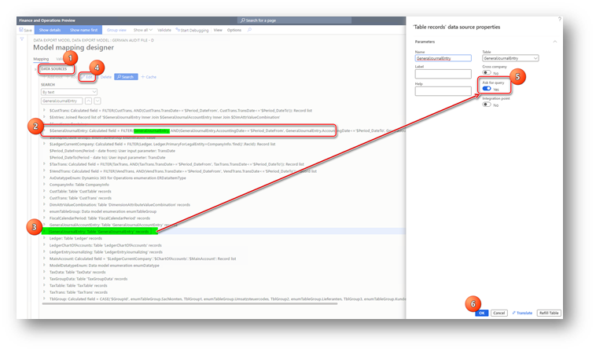

Add filters to an audit file configuration
[!include[banner](../includes/banner.md)]This topic explains how to add a filter for data in the German audit file. For example, you can add a filter for the Posting layer field in the General journal entry table.
As explained in German audit file (GDPdU/GoBD) overview, the SPEZIALBUCHUNG (Posting layer) field of Sachkontobuchungen data set is collected from the $GeneralJournalEntry/PostingLayer electronic reporting data source path. To add the possibility of filtering data in the report by the SPEZIALBUCHUNG (Posting layer) field, complete the following steps:
- Go to Workspaces > Electronic reporting, and then select Reporting configurations.
- In the configuration tree, select the Data export model configuration, and derive it by creating a format that will be used in your company.
- Select the derived configuration, and on the Action Pane, select Designer.
- On the Data model page, on the Action Pane, select Map model to datasource.
- On the Model to datasource mapping page, select the Group definition. On the Action Pane, select Designer, and then search for “$GeneralJournalEntry” data source in the Data sources section on the Model mapping design page.
“$GeneralJournalEntry” data source is a calculated record list that sources data from the GeneralJournalEntry table (this can be observed from the formula for “$GeneralJournalEntry”).
- In the Data sources section on the Model mapping design page, search for GeneralJournalEntry and select this table.
- In the Data sources section, select Edit and then select the Ask for query check box for the GeneralJournalEntry table. Select OK.

- Save, close, and complete the configuration.
- Unmark the Default for model mapping parameter for the parent configuration, Data export model, if it was marked. Select your derived configuration as Default for model mapping.
With this change, when you run Data export periodic tasks, you will see Records to include on the FastTab in the dialog box for the report for the General journal entry table. Select Filter to specify conditions for general ledger entries filtering.

To filter by the Posting layer field in the General journal entry table, select Posting layer in the Field column, and then select the necessary posting layer in the Criteria column.